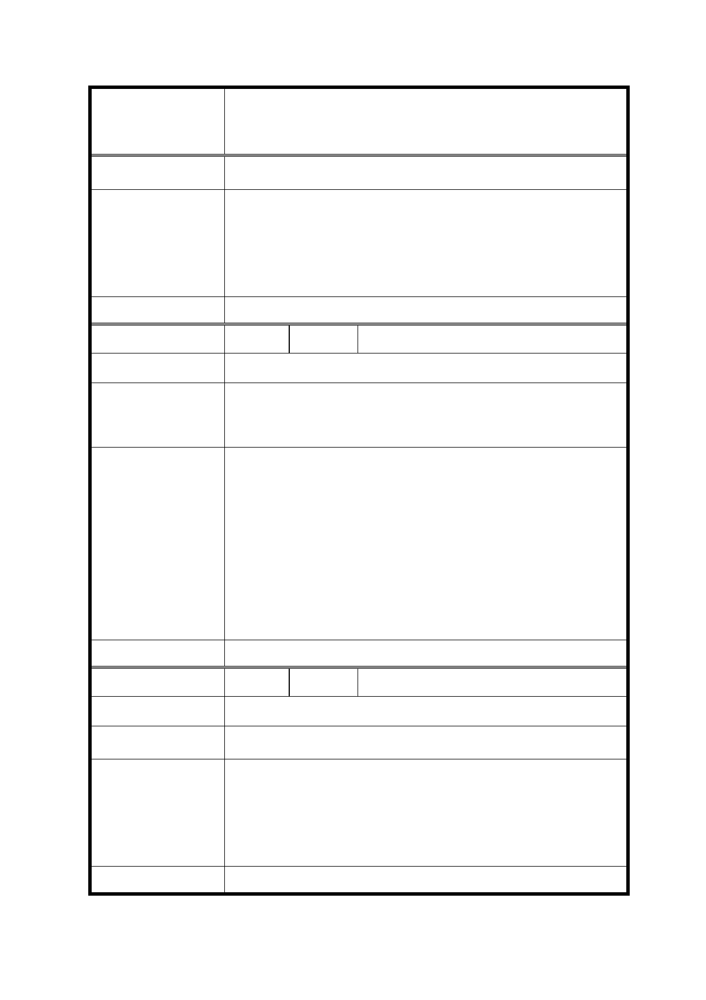

修訂臺北市信義計畫地區細部計畫（第三次通盤
案 名 檢討）案
建 議 辦 法 檢討政府的公告方式及舉辦說明會的次數。
市府回覆意見
1. 本案業依都市計畫法第 19 條規定，自 102 年 10 月 19 日起
在本府及信義區公所公開展覽 30 天，並登載於本府都市發
展局網站及聯合報、自由時報公告周知。
2. 並業於 102 年 10 月 30 日（三）下午 7 時假臺北市信義區公
所 701 會議室舉行說明會。
委 員 會 決 議 依市府回覆意見辦理。
編
號 18
陳情人 鄧○燦
陳 情 理 由 台北市為首善之都應支持公益或藝文展演空間。
建議辦法
市府回覆意見
台北市政府應整合目前未充分使用之公共空間，例如重新規劃
使用率低的蚊子館，以增加台北市藝文展演空間。例如華山藝
文特區、紅樓等。
1. 本次通盤檢討係依 102 年 12 月 30 日｢臺北市文化資產審議
委員會第 54 次會議｣決議登錄「新舞臺」為本市文化景觀，
並附帶決議｢於新舞臺所在基地維持原表演空間機能，未來
使用如有變更，需提送臺北市文化資產審議委員會審議｣，
故配合修訂計畫內容，以維該文化景觀。
2. 另依本計畫區規定，目前未開發之公有地（A13 及 A25 街廓）
均得設置｢第 15 組：社教設施｣及｢第 16 組：文康設施｣，至
是否從事藝文表演活動，仍應考量本府政策及實際開發需求
而定。
委 員 會 決 議 同決議二及市府回覆意見。
編
號 19
陳情人 蘇○德
陳 情 理 由 增加民眾參與程序。
建 議 辦 法 檢討民眾參與都市計畫通盤檢討的程序及方式。
市府回覆意見
1. 本案業依都市計畫法第 19 條規定，自 102 年 10 月 19 日起
在本府及信義區公所公開展覽 30 天，並登載於本府都市發
展局網站及聯合報、自由時報公告周知。
2. 並業於 102 年 10 月 30 日（三）下午 7 時假臺北市信義區公
所 701 會議室舉行說明會。
委 員 會 決 議 依市府回覆意見辦理。
36